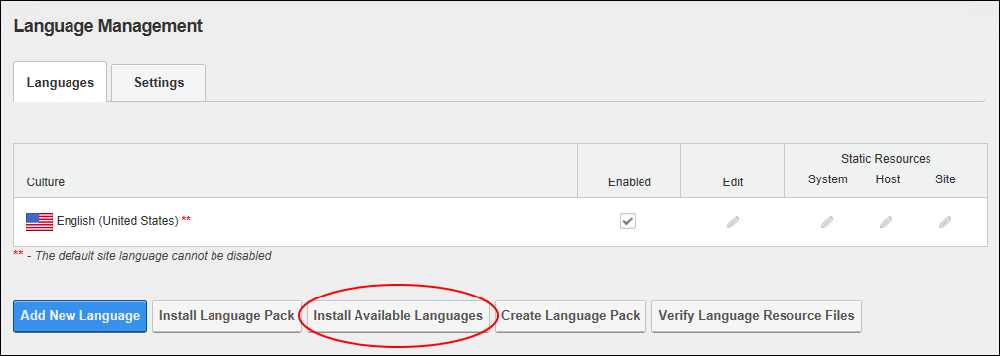
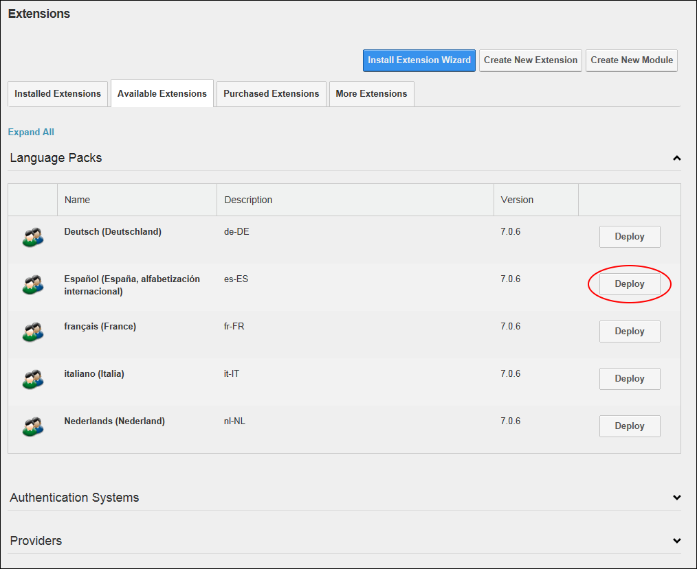
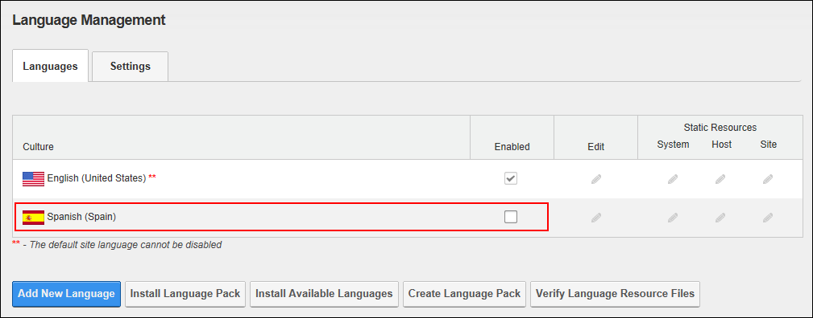

Installing Available Languages
How to install one of the language resource packages that is included by default with the DNN application. Once installed, the language pack will be available to all sites within this installation. Restricted to SuperUsers.
Tip: Language Packs can also be installed via the Host > Extensions page (See "Installing and/or Deploying Available Extensions") or the Admin > Advanced Configuration Settings page, See "Deploying Language Packs"
- Navigate to Admin > Advanced Settings >
 Languages - OR - Go to a Languages module.
Languages - OR - Go to a Languages module.
- Select the Languages tab.
- Click the Install Available Languages button located at the base of the module.

- You are now located on the Host > Extensions page.
- Expand the Language Packs section.
- Click the Deploy button beside the language to be deployed.

- Complete Steps 3-7 of the Install Extension Wizard. See "Using the Install Extension Wizard"
- Repeat Steps 6-7 to deploy additional language packs.
- Navigate back to the Admin > Languages module to see the newly installed language(s) displayed in the Culture grid. Installed languages must be manually enabled on a site. This allows a SuperUser to install the language and an editor or Administrator to enable it at a later time.
